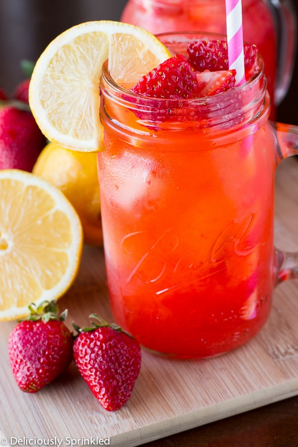

Description
An easy to make beverage. Enjoy the refreshing taste of strawberries and lemon
that comes from this homemade beverage.
Ingredients
-
Strawberries: Hull 1/2 lb of strawberries (cut the green stem off),
and toss them in your food processor.
-
Lemons: Fresh lemons, depending on the size of your lemons, you will needed
between 6-8 medium size lemons to get 1 1/2 cups of lemon juice for this recipe.
-
Sugar: White granulated sugar gets dissolved in water to create a simple syrup.
-
Water: How much water you add depends on how sweet you like your lemonade.
Directions
-
Puree teh srawberries. Use a blender or food processor to puree teh strawberries.
Strain them through a fine mesh sieve to remove seeds, if you want.
-
Make a simple syrup. Add sugar and 2 cups of water to a saucepan.
Bring to a simmer and stir until sugar is dissolved. Remove from ehat and cool to room temperature.
-
Juice your lemons. Strain the lemon juice through a fine mesh sieve into a pitcher.
-
Combine syrup, lemon juice, and pureed strawberries. Stir to combine.
-
Chill.